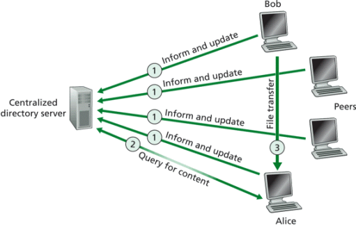
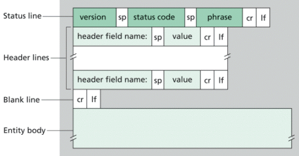

Course Project
Objectives
The objective of this project is to develop a simple peer to peer file sharing system that uses a centralized directory server. This project consists of and is delivered in three stages: a survey paper discussing different existing P2P architectures for file sharing; a detailed design of of the system to be implemented including its protocols; and the final demonstration of the working system. The overall architecture of the system will be similar to that of the original Napster, as shown below.

We assume that this system can be used to share MP3 files. Each peer is uniquely identified by the name of its host computer; each host has a unique IP address. The system consists of a centralized directory server and a number of peers; each peer combines a functionality of a P2P client and a transient P2P server. In our system, the P2P client can acts as the client to the directory server to obtain information about available files; it also acts as the client of a P2P transient server in order to obtain desired files. Therefore, this project consists of two major parts: implementation of the communication protocol between the directory server and a P2P client, and implementation of the communication protocol between a P2P client and a transient P2P server.
This project is adapted from a similar project offered at University of Manitoba, Canada
Requirements
The description below outlines the minimum requirements for this course project. Students are encouraged to implement features that go above and beyond those described here. However, resulting systems must meet (or exceed) all requirements presented in this document.
Additional requirements:
- You must work in teams of two or three students;
- You may use any programming language (or combination thereof) to implement this project;
- You must use sockets to implement client/server communication.
Directory server and its interaction with P2P client
The centralized directory server maintains a directory of MP3 files which users are willing to share. It contains entries which list MP3 file name, file size, and the host name where the file resides. When a user, say Bob, wants to advertise a file for sharing, he sends a complete directory entry to the directory server using an "Inform and update" message. This message is sent using UDP. The directory server acknowledges the "inform and update" message. A user can send multiple entries in one message and end them with CR LF characters, similar to the format of the header lines in an HTTP request message shown below.

When a client wants to exit from this application, it sends an "exit" message upon receiving which the server deletes the entries associated with this client and sends an acknowledgement to the client. When a P2P client wants to get some content from its peers, it sends a "query for content" message to the directory server specifying the file name or asking for a directory listing from the directory server. All messages sent to the directory server can resemble the HTTP request message. For example you can have "inform and update", "query" and "exit" in the method field. In the so called URL and version fields you can put client's host name and address. In each header line, you can put file name in the header field name field and file size in the value field. The directory server should be multi-threaded and should handle concurrent writings to the media file directory.
When the directory server replies to a P2P client, it uses the format similar to the HTTP response message. The format of the HTTP response message is shown in the figure below.

The version field can be omitted. A status code and a status phrase are used to acknowledge the various request messages sent by clients. At least two status codes (and corresponding phrases) must be implemented. These are 200 (OK) and 400 (ERROR). Other status codes may be defined (please describe them in your system documentation). When acknowledging a "query" request, directory entries in the query result can be transmitted using the header lines. Each header line contains an entry for a file that is stored on a peer; both file name and file size are included.
Protocol requirements between P2P client and directory server
For messages exchanged between the directory server and a P2P client, we assume that the maximum transfer unit (MTU) size of 128 bytes. Therefore you need to segment longer messages into smaller packets. Make sure that packets can be re-assembled into original message at the destination. For messages sent to the directory server, each packet must contain a first line which indicates the host name and address of the sending client, this way the directory server can recognize which client this packet was sent from. In order to implement reliability we will need acknowledgements and time-outs for individual packets. Each packet has to be acknowledged which means that an "ACK" message has to be implemented. This also means that packets need to have sequence numbers.
The protocol handles lost packets by having the sender of the data packets use a timeout with retransmission. If a data packet is lost, the sender eventually times out and retransmits the packet. If an acknowledgment packet is lost, the sender of the data packet still times out and retransmits the data packet. In this case the receiver of the data packets notes from the block sequence number in the data packet that it is a duplicate, so it ignores the duplicate of the data packet and retransmits the acknowledgement.
There is a subtle problem in the above specification of the protocol. If both the sender and receiver use a timeout with retransmission, and both retransmit whatever they last sent, a condition termed the sorcerer's apprentice syndrome results (see RFC 1123). Actually, with the above scheme, when a time-out occurs (say because the ACK was delayed in the network), every further data packet and acknowledgement packet will be sent twice. The correction to this syndrome is for the sender never to retransmit a data packet if it receives a duplicate acknowledgement.
In order to determine the time-out interval you should use the round-trip time estimation procedure outlined in the section 3.5.3 of the text book. Please use parameters alpha and beta from the book and also assume that initial EstimatedRTT=100ms.
P2P client and its interaction with P2P server
A P2P client is a client of both the directory server and the P2P server. The P2P client provides a text-based user interface for a user to interact with the directory server. This is the minimal requirement and you are encouraged to implement a client with a nice GUI. With this interface, commands such as "inform", "query", and "exit" are issued and responses returned from the directory server are displayed. A user can then select a server from a list of P2P servers that have a desired file, and issue the HTTP GET command to retrieve desired MP3 files from the selected P2P server.
No particular format is enforced on how to maintain the database of MP3 file entries at the directory server. Similarly, no particular format is enforced for the query results of a directory listing request. However, the choices of these formats must be documented in the system documentation (detailed below), which must clearly describe how to use the user interface to issue commands or to select a P2P server in the user documentation.
HTTP 1.1, as defined in RFC 2616, will be used to transmit MP3 files between a P2P client and a P2P server. Separate HTTP requests are sent for each MP3 file desired. A P2P server will be able to handle multiple simultaneous requests in parallel. This means that the P2P server must be multi-threaded. In the main thread, the server listens to a fixed port. When it receives a TCP connection request, it creates a new TCP socket and services the request in a separate thread. The subset of HTTP 1.1 functionalities needed in this project is
- Only GET request needs to be implemented. The URL field in GET method contains the name of the requested file;
- The server must implement HTTP code 200, 400, 404 and 505 correctly.
Port number assignment
The same port number must be used for both the directory server and the P2P server (because they use different protocols, namely UDP and TCP respectively, this would not be a problem even when the two servers are running on the same host). Each student team will be assigned a unique port number upon our receiving team information. Before then, feel free to use a port that is not widely used on the Internet. Please refer to section "About port numbers" below.
Other aspects
The basic ingredients for your code for TCP and UDP are given in sections 2.7 and 2.8 in the textbook respectively. These are written in Java and you are welcome to use them if you choose Java for implementation.
About port numbers
At any given time, multiple processes can use either UDP or TCP. Both TCP and UDP use 16-bit integer port numbers to differentiate between these processes. Both TCP and UDP define a group of well known ports to identify well-known services. For example, every TCP/IP implementation that supports FTP assigns well-known port of 21 (decimal) to the FTP server. TFTP servers, for the Trivial File Transfer Protocol, are assigned the UDP port of 69.
Clients on the other hand, use ephemeral ports, that is short-lived ports. These port numbers are normally assigned automatically by TCP or UDP to the client. Clients normally do not care about the value of the ephemeral port; the client just needs to be certain that the ephemeral port is unique on the client host. The TCP and UDP codes guarantee this uniqueness.
RFC 1700 contains the list of port number assignments from the Internet Assigned Authority (IANA). However, usually the file port number is more up-to-date than RFC 1700. The port numbers are divided into three ranges:
- The well-known ports: 0 through 1023. These port numbers are controlled and assigned by IANA. When possible the same port is assigned to a given server for both TCP and UDP. For example, port 80 is assigned for a Web server, for both protocols, even though all implementations currently use only TCP.
- The registered ports: 1024 through 49151. These are not controlled by the IANA, but the IANA registers and lists the uses of these ports as a convenience to the community. When possible the same port is assigned to a given service for both TCP and UDP. For example, ports 6000 through 6063 are assigned for an X Window server for both protocols, even though all implementations currently use only TCP. The upper limit of 49151 for these ports is new, as RFC 1700 lists the upper range as 65535 (FYI only).
- The dynamic or private ports, 49152 through 65535. The IANA says nothing about these ports. These are what we call ephemeral ports.
Due dates and guidelines for deliverables
Part 1: Survey paper
- Discuss different existing P2P architectures for file sharing;
- Minimum 5 pages (not counting figures, tables, references, etc), double spaced, 10 pt Times New Roman font;
- All references must be properly cited;
- Contributes 5 points toward the course total;
- Due on October 11, 2010.
Part 2: Design paper
- Describe a detailed design of of the system to be implemented;
- Include a detailed description of all protocols you plan to implement in your system;
- Include a pseudo-code description of the directory server, P2P client, and P2P server;
- Students are strongly encouraged to use UML, in particular, sequence and class diagrams;
- No min/max page requirement;
- Contributes 5 points toward the course total;
- Due on October 25, 2010.
Part 3: Final demo and documentation
- All source code must be turned in using Blackboard Vista after the demo;
- Documentation must include the following:
(a) user documentation: describes how to compile and run your programs, and
(b) system documentation: describes data structures, design choices, and important algorithms used; - No min/max page requirement;
- Contributes 15 points toward the course total;
- Due on December 8, 2010.